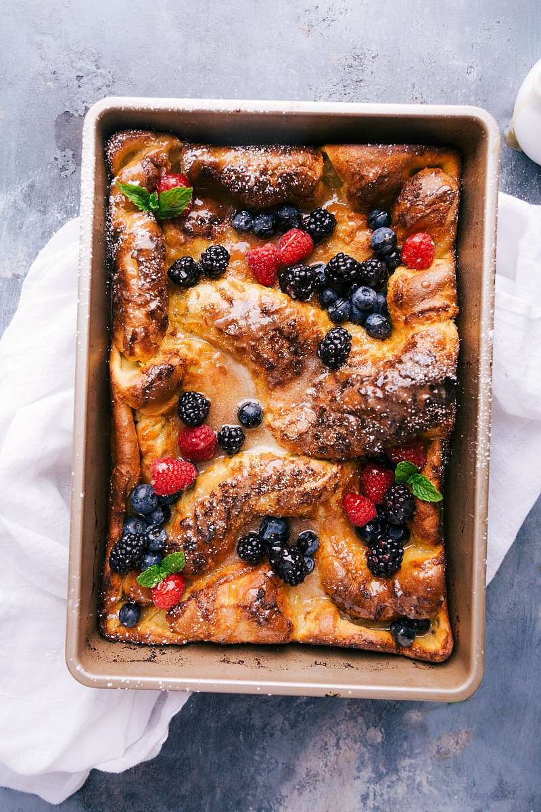
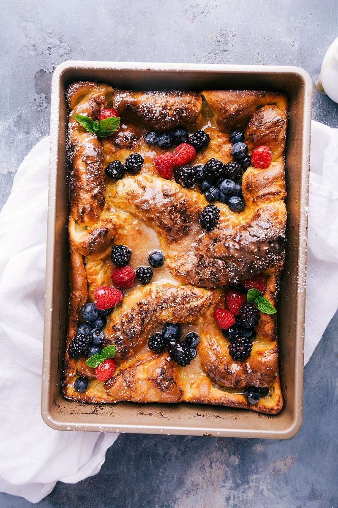

Dutch baby pancake

هذة الفطائر تحظى بشعبية كبيرة منذ بداية القرن الأول، ومع مضي الزمن أصبح لكل بلد طريقة فريدة و خاصة به لصنع الفطائر اللذيذة، سأشارك بعض الطرق في كل من: هولندا، اليابان، المانيا.


 
